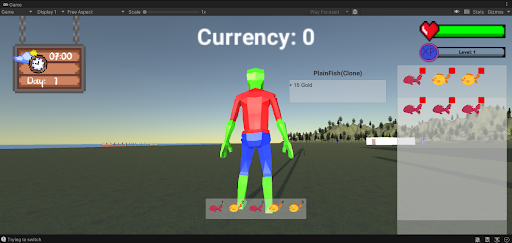

I am currently pursuing a BSc in Computer Science at AUT, with an expected graduation in December 2024. Below are a few selected projects that I’ve completed, which I am particularly proud of.
State Machines Game Game Development
This was my first assignment for game dev, I had to learn c++ and how to use a simple framework of a game engine. I took inspiration from using Finite State Machines in another class at the time to try make a puzzle solving game using the same ideas. This taught me a lot about both classes at once. This project was one of the hardest for me to program so far at least.
Snowman Graphics Programming
This was my first time using Freeglut libraries. I learnt how to make a 2D scene and was tasked with creating 2 unique features. I decided to make 3, the sun and moon moving around the sky along with the day night cycle. I also animated the grass along the bottom where it will "blow" in the wind Then finally when a user presses t, the snowman will talk.
Unity Fishing Chronicles Standard Development Practices
This was my first Unity project, developed in collaboration with a team of four, including myself and three friends. We worked on this project while learning about SCRUM and sprint management. My primary contributions were implementing the camera and character movement, as well as serving as the project owner.
